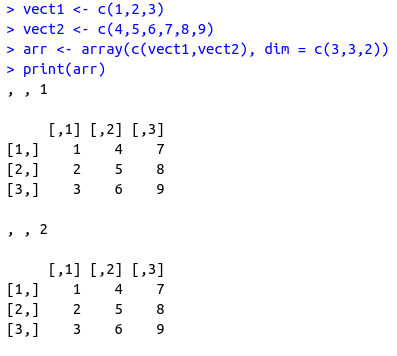
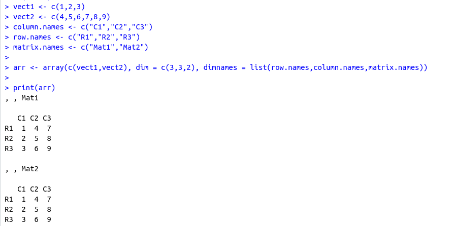
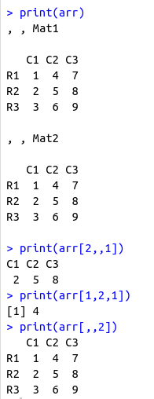

Arrays
Arrays are the R data objects which can store data in more than two dimensions. For example- If we create an array of dimension (2,3,4) then it creates 4 rectangular matrices each with 2 rows and 3 columns.
Note: It takes in vector as input and uses the values in the dim parameter to create an array.

~~~~~~~~~~~~~~~~~~~~~~~~~~~~~~~~~
Naming Columns and Rows

~~~~~~~~~~~~~~~~~~~~~~~~~~~~~~~~~
Accessing Array elements
